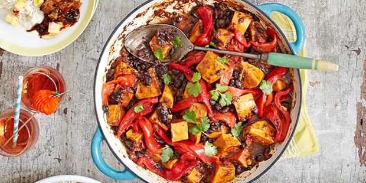

Pepperroot
£15

Simmered in huge pots across the Caribbean, this thick and rich stew can include aubergine, okra, squash,
potatoes and pretty much anything else that grows in the islands’ rich earth. Beef is the most common meat,
while fungi – tasty cornmeal dumplings – add texture. It’s called souse in the Bahamas, which may refer to
the condition of the cook given that no two recipes or even batches are alike.
Ingredient:
Garlic, Onion, Tomatoe, rice, Chilli powder,Meat
Calories: 600